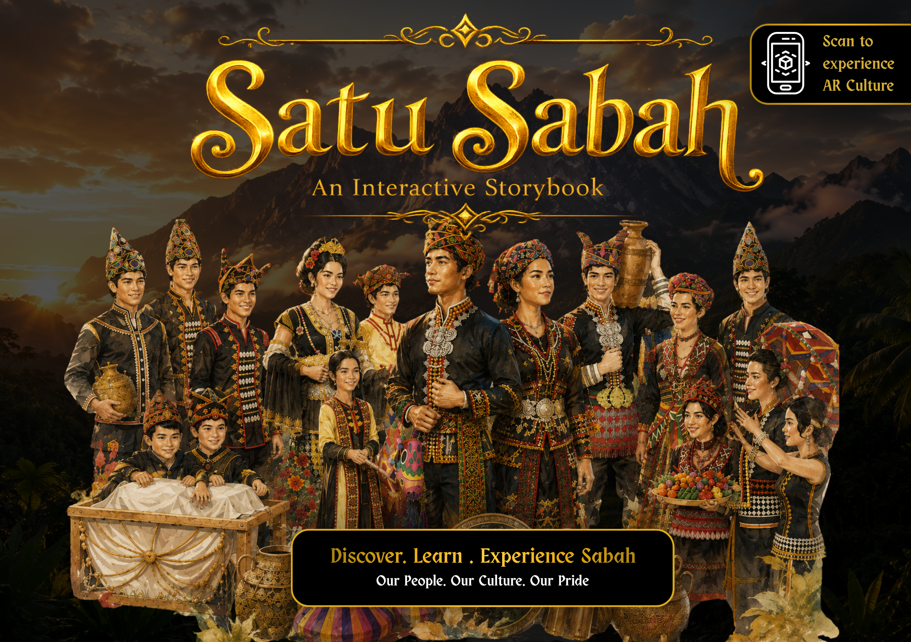
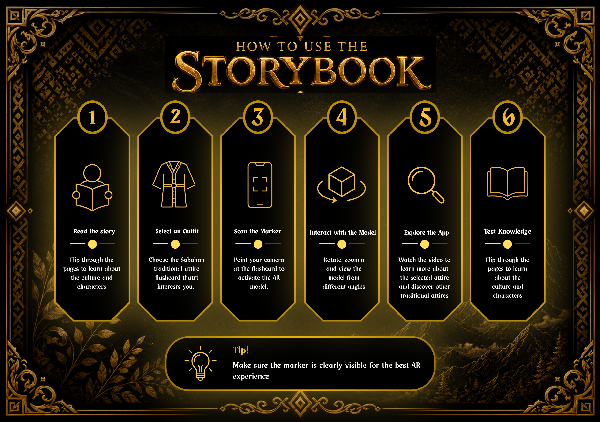
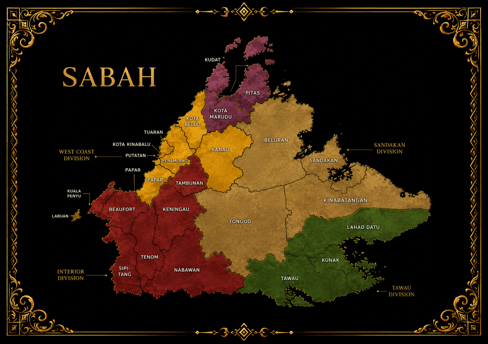
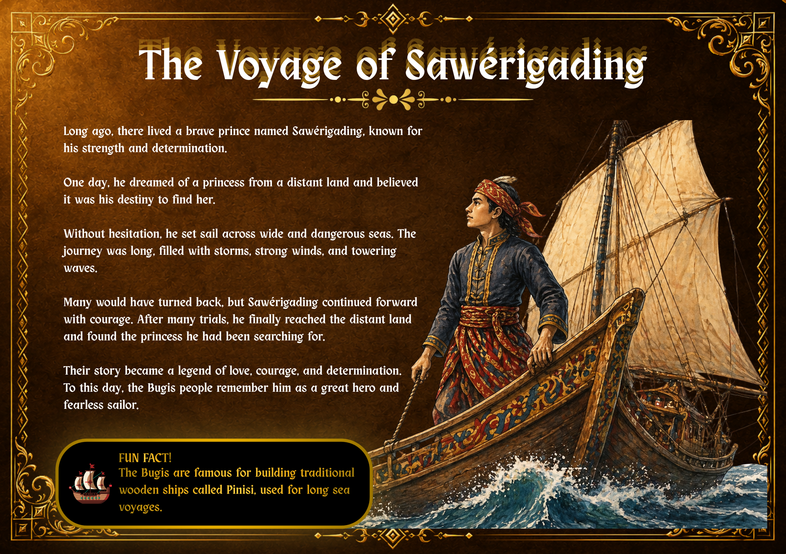
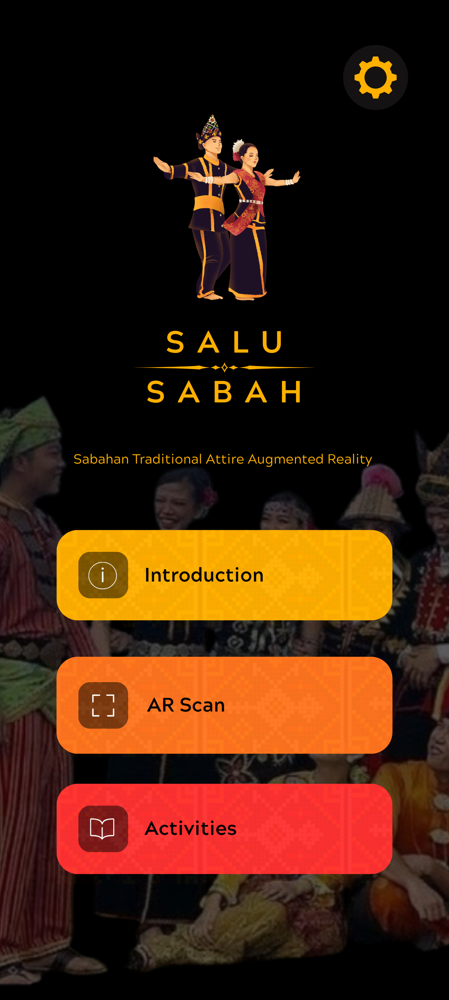
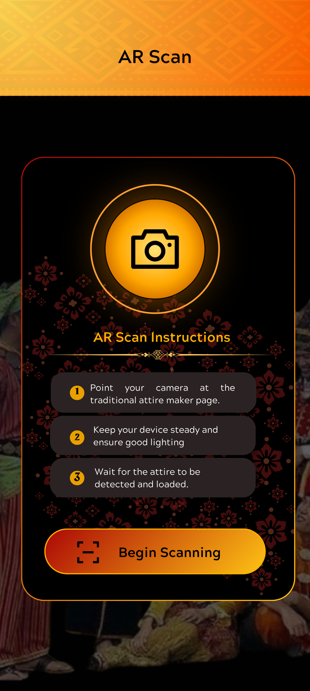
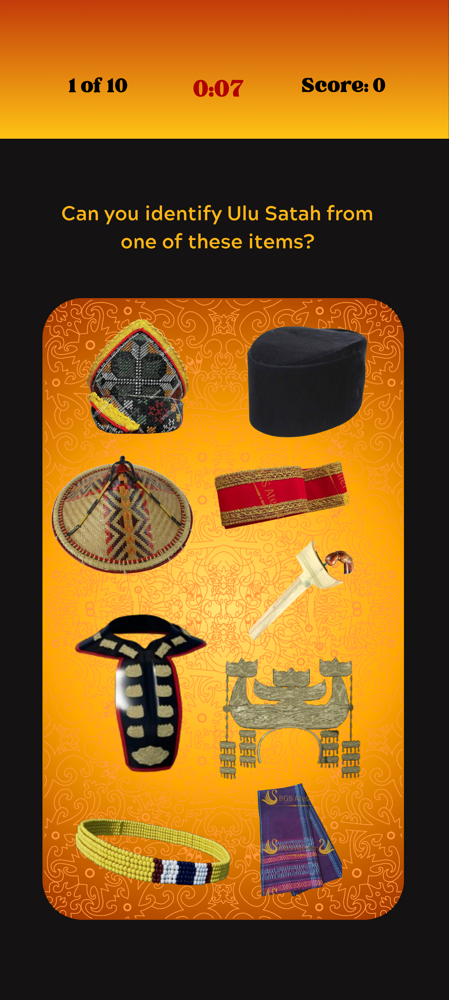

Sabahan Traditional Attire Augmented Reality Application
Salu Sabah is an Augmented Reality (AR) application developed to preserve and promote Sabah's traditional attire through interactive digital learning. The application allows users to explore traditional costumes from various ethnic groups in Sabah using 3D models, cultural information and immersive AR visualisation.
Before developing the AR application, a digital storybook was created to introduce Sabah's traditional attire and cultural heritage through interactive storytelling. The storybook helps users understand the background and significance of each traditional costume before exploring the AR experience.







One of the biggest challenges was integrating multiple 3D models while maintaining smooth application performance. Another challenge was ensuring that cultural information was presented accurately and clearly for users.
The project successfully demonstrated how Augmented Reality technology can be used to preserve and promote Sabah's cultural heritage through an engaging and interactive learning experience.